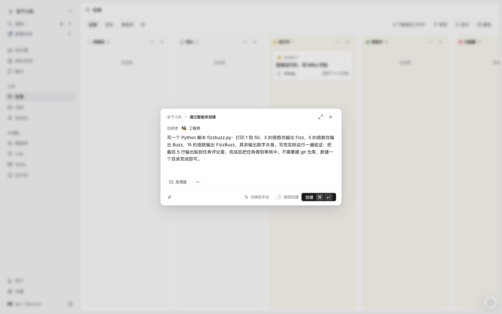
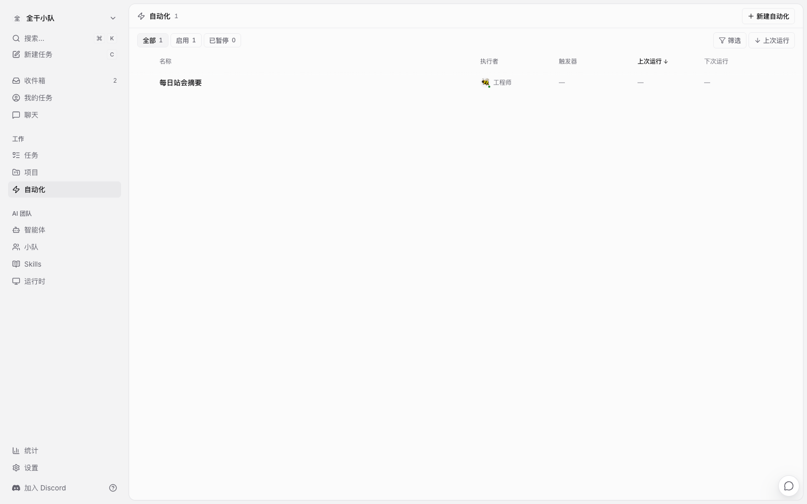
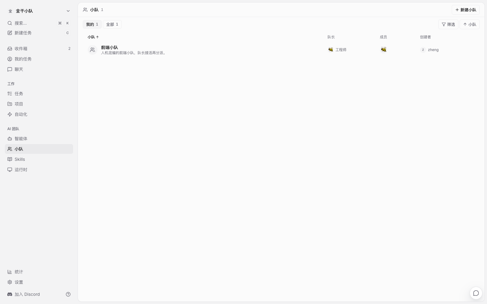
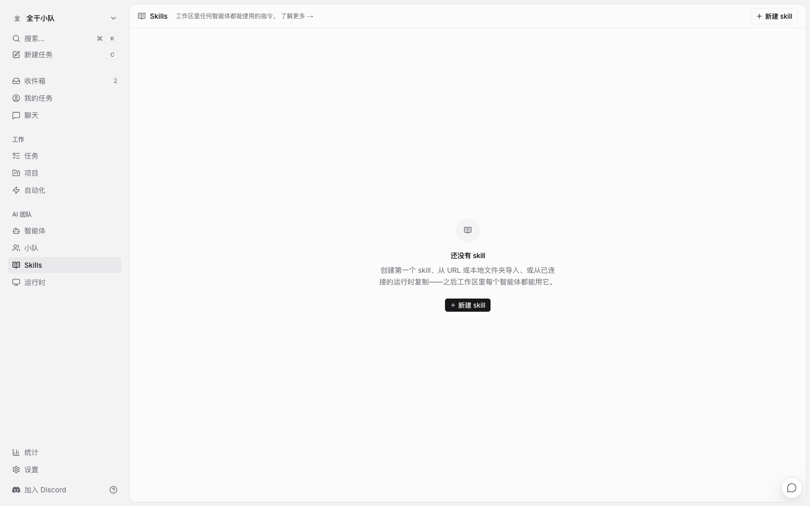
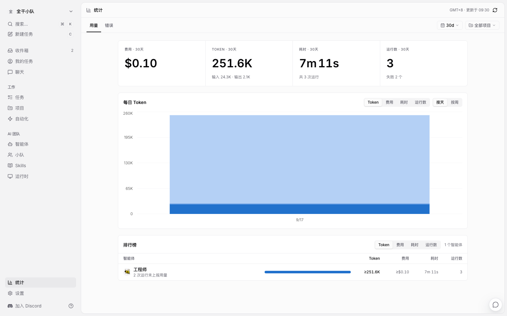
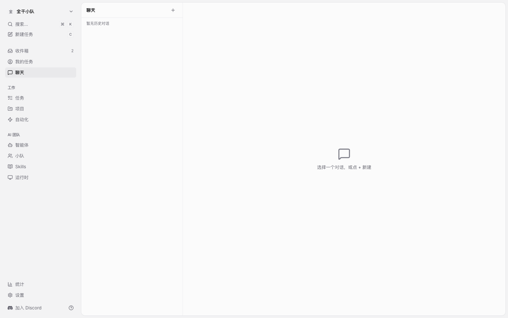
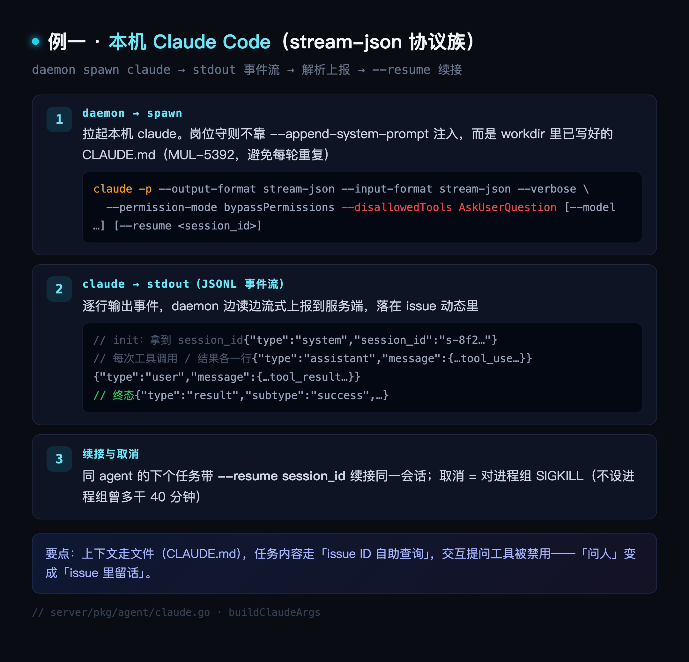
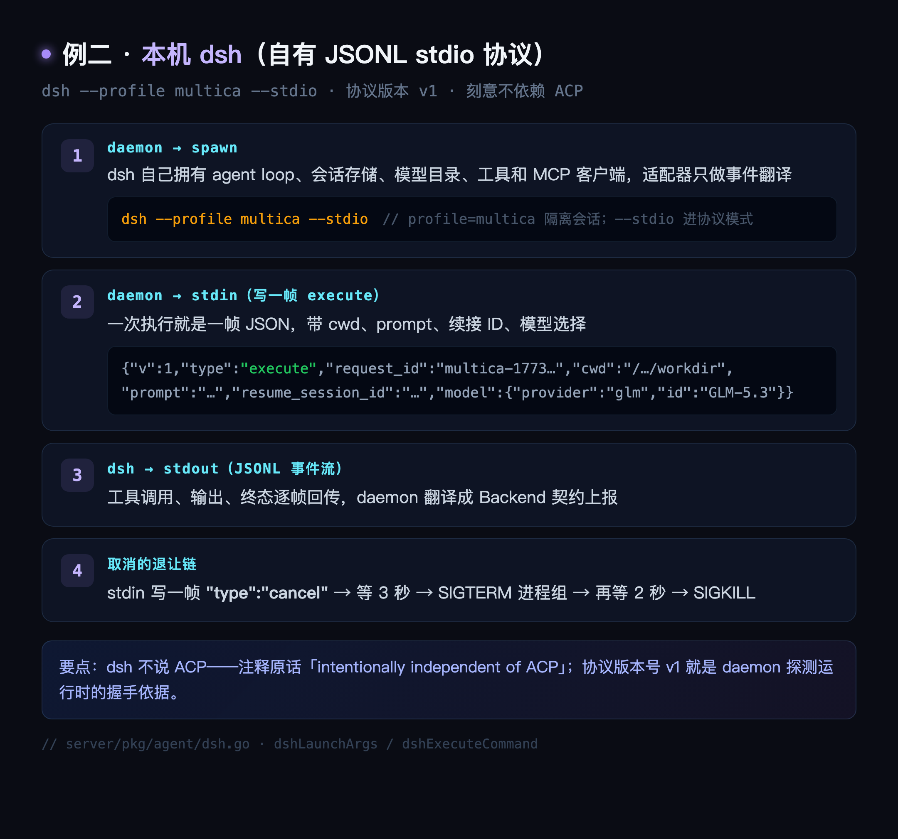
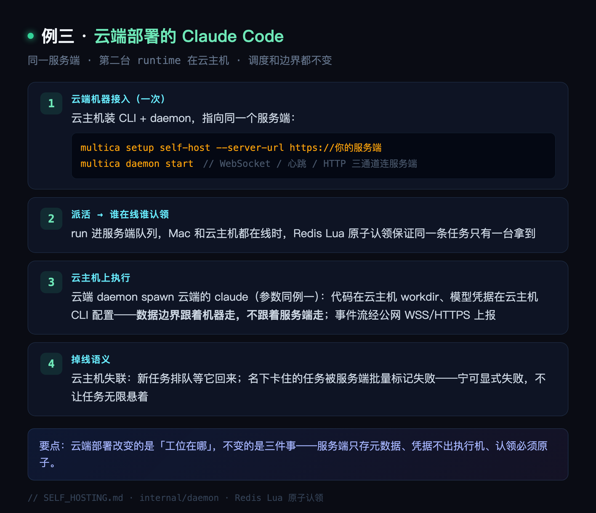

一个 Apache 2.0 开源项目（github.com/multica-ai/multica），定位是「人 + AI 编码 agent 混合团队的工作区」。核心模型一句话：工作区里有 agent 和人两类成员，任务就是 issue，指派给 agent 就会触发一次运行，agent 在你自己的电脑上干活，做完把任务挪到审核中，人验收。支持 26 种编码 CLI（Claude Code、Cursor、Codex、Kimi、OpenCode……），可完全自托管。
功能盘点：
| 能力 | 说明 | 源码位置 |
|---|---|---|
| 智能体档案 | 五态状态机 idle/working/blocked/error/offline，可设最大并行任务数 | migrations/001 |
| 任务看板 | 7 个状态归 4 类，指派对象可以是人类、agent 或小队 | migrations/001、084 |
| 小队 Squad | 队长必须是 agent，队员人机混编，leader 接活再分派 | migrations/084 |
| 自动化 Autopilot | cron/webhook 定时触发，create_issue（自动建任务）或 run_only（只执行）两种模式 | migrations/042 |
| Skills 技能包 | 经验沉淀成可复用技能，绑定给指定 agent | migrations/008 |
| 收件箱 | 通知分三级：需要人拍板 / 需要关注 / 仅告知 | migrations/001 |
| 用量统计 | 每次运行、每个任务、每个 agent 的 token 与费用归因 | migrations/013、032 |
| 运行时 | 每台电脑一个 daemon，自动探测本机 CLI，多机可同时在线 | internal/daemon |
| Chat | 不建任务，直接对话派活或提问 | apps/web |
通知系统的最大痛点从来不是发不出，是不分轻重地全发——收件箱的三级分级就是冲着这个去的。
● ● ●
服务端三个容器：PostgreSQL 17、Go 后端、Next.js 前端。一条命令：
# 从 .env.example 生成配置，随机生成 JWT 密钥，起三件套
git clone https://github.com/multica-ai/multica.git
cd multica && make selfhost
前端在 localhost:3000，API 在 localhost:8080。登录用邮箱验证码：没配邮件服务时验证码打印在后端容器日志里，本地测试也可以在 .env 里设 APP_ENV=development 加固定验证码。
然后把你的电脑接入为运行时，两步：
# 浏览器 OAuth 登录后 token 自动回传给 CLI
multica setup self-host
# 守护进程常驻，扫描本机已装的编码 CLI
multica daemon start
我的 Mac mini 上装了 claude、hermes、dsh 三个 CLI，全部被自动探测注册。模型 API key 存在本机 CLI 配置里，从头到尾不出境。
● ● ●
运行时页显示每台接入电脑的在线状态和负载：

运行时页：本机在线
点进机器看细节：CLI 版本、健康度、费用。Multica 只显示「Claude Code 2.1.66，在线」，它不碰 CLI 背后的任何凭据。

运行时详情：检测到 Claude Code 2.1.66
新建表单四件事：名称、描述、指令（岗位守则）、运行时和模型绑定。指令是每次执行时注入的提示词，写清它负责什么、不负责什么：

新建智能体：名称、描述、指令
保存后详情页亮「在线 · 空闲」，可以派任务、发评论、改状态：

智能体详情：在线 · 空闲
新建任务默认智能体模式：创建者选 agent，描述写需求，标题自动生成。网页弹窗和命令行都行：
# 指派给智能体，任务立刻入队
multica issue create --title "写一个 fizzbuzz.py 并自测" \
--assignee 工程师 --description-stdin < task.md

新建任务：智能体模式，描述驱动
提交后任务页立刻显示「工程师 正在工作」，右侧执行日志实时滚动，挂着本次运行的 token 与费用（实测一次 25.16 万 tokens，约 $0.10）：

执行中：等待智能体响应，日志实时滚动
我实际跑的时候出过一次事故：本机模型密钥过期，第一次运行 401。看板动态里标出「失败 · 提供商认证失败」，错误归属到提供方而非任务本身，修好密钥点「重试运行」，第二次一分钟跑完——完成评论里贴着自测输出，状态自动从进行中挪到审核中。失败有归属、重试有预算，这两件事它做在明处。

时间线：失败与成功在同一条动态流里
看板七列：待规划、待办、进行中、审核中、已阻塞、已完成、已取消。backlog 里的任务即使指派了 agent 也不会入队，看板的每一次拖动背后都是一次运行调度条件的变化：

看板：QUAN-2 停在审核中等人验收
agent 的多数输出是「仅告知」，少数是「需要关注」，真正要人拍板的才标「需要人拍板」：

收件箱：三级分级
Autopilot 用 cron 或 webhook 定期触发 agent，两种模式：create_issue（自动建任务走正常派活）或 run_only（只执行不建任务）。我建了一个「每日站会摘要」，每天让工程师 agent 汇总工作区动态：

自动化页：每日站会摘要
小队的队长必须是 agent，成员可以人和 agent 混编。队长收到任务后用 @mention 分派给队员：

小队页：前端小队，队长是工程师
Skills 把踩过的坑沉淀成技能包绑定给 agent；统计页把 token 和费用按任务、按 agent 归因；聊天可以不建任务直接派活或提问：

Skills 页

统计页：token 与费用归因

聊天页
● ● ●
总架构一张图：
你（浏览器）
│ 建任务板 / 派 issue / 写评论
▼
Multica 服务端（只存状态和内容，不跑 agent）
│ WebSocket 唤醒 + HTTP 认领
▼
你电脑上的 daemon（常驻后台进程）
│ spawn 子进程
▼
Claude Code / Cursor / …… 26 种编码 CLI
│ 用 multica CLI 回读写
▼
Multica 服务端（issue 状态、评论、PR 关联）
它的服务器不执行任何 agent，所有 agent 都跑在用户自己的电脑上。三个动机：代码不出境（服务器只流过 issue 标题、评论、状态这些协作元数据）；不锁供应商（daemon 拉起的是你本机装好的 CLI，用什么套餐它不掺和）；agent 和人对称（没有特权后门）。
派活只给 ID，不给内容。 看 daemon 给 agent 组装的任务指令，来自 server/internal/daemon/prompt.go:215：
b.WriteString("You are running as a local coding agent for a Multica workspace.\n\n")
fmt.Fprintf(&b, "Your assigned issue ID is: %s\n\n", task.IssueID)
// 交付规则：活干完送待验收就行，done 永远留给人
fmt.Fprintf(&b, "Start by running `multica issue get %s --output json` to understand your task, then complete it.\n", task.IssueID)
它没有把 issue 标题、描述、验收标准塞进 prompt，只给了一个 ID。agent 干活用的 multica CLI 和人浏览器里点鼠标走同一套接口，凭证是任务作用域的 token（internal/daemon/daemon.go:163），越权直接被接口层挡住。
认领一次拉回全部执行现场。 daemon 调认领接口，响应不是任务 ID，而是 internal/daemon/types.go:70 里的完整结构：工作区提示词、agent 人设、绑定仓库、技能包哈希、续接会话指针、预计算好的增量评论。拿到任务那一刻不需要再发第二次请求。多台机器抢同一个任务，服务端用 Redis Lua 脚本把「出队」和「标记运行中」焊成原子操作。
26 个 CLI 收敛成一个接口。 pkg/agent 包定义 Backend 接口，stream-json 协议族（Claude Code、Cursor、CodeBuddy、Qwen）、ACP 协议族（JSON-RPC over stdio，Hermes、Grok CLI 等）各是一组 adapter；dsh 是第三种——自有 JSONL stdio 协议，刻意不依赖 ACP（dsh.go:29），协议版本号就是 daemon 探测运行时的握手依据。工程细节全是事故痕迹：进程创建强制进程组所有权，取消时对整组 SIGKILL（pkg/agent/launch.go:112）——不这样，Windows 上一个被取消的 agent 曾偷偷多干 40 分钟；协议关键 flag 有黑名单，用户配置不能覆盖上报通道（launch.go:445）。
交付比派活讲究。 完成上报先做 NUL 消毒（真实 issue #7098：一个 \u0000 让任务永远卡 running）；幂等条件更新防重放；「假成功」（上下文耗尽没交付）重路由成失败；真失败先归因（网络/上下文/runtime 掉线），自动生成子任务重试，失败链可追。
防跑飞靠显式规则，不靠 prompt 求模型。 internal/service/issue_trigger.go:97 的 WillEnqueueRun 是全项目唯一发车判定（backlog 不发车）；每个 run 强制解析责任人，解析不出来且开了严格模式直接拒发；squad leader 协议里有个 no_action——leader 评估后觉得不需要动就静默退出，防止 agent 互相 @ 刷屏。
记忆是显式的。 四层：会话续接（--resume）、工作区提示词、issue 评论增量下发、Skills。最意外的是它主动写配置关掉 Codex 的原生 auto-memory（internal/daemon/execenv/codex_memory.go:11）——那套记忆是黑盒且会跨项目泄漏，长期记忆的答案是平台自有的、项目作用域的、用户可见的存储。
● ● ●
从你在看板上拖一张卡片，到 agent 交差，源码里是九步：
WillEnqueueRun（internal/service/issue_trigger.go:97），全项目唯一发车判定——backlog 里的任务不发车；排队期间你追加的评论会合并进同一个任务，agent 醒一次全看到\u0000 让任务永远卡 running）、幂等条件更新防重放、「假成功」纠偏（上下文耗尽没交付就重路由成失败）；真失败先归因再自动生成子任务重试● ● ●
26 种 CLI 两种协议族，收敛成一个接口：
// 所有编码 agent 的统一执行接口，daemon 只面向接口编程
type Backend interface {
Execute(ctx context.Context, prompt string, opts ExecOptions) (*Session, error)
}
--output-format stream-json 拉起子进程，逐行读 JSON 事件——assistant 消息、工具调用、工具结果——边读边流式上报不管哪族，三条硬约束相同：协议关键 flag 有黑名单，用户自定义启动参数不能覆盖上报通道（launch.go:445）；交互式提问工具（如 Claude Code 的 AskUserQuestion）被启动参数直接禁用——无人值守下没人看弹窗，agent 会自己猜答案，「问人」必须变成「在 issue 里留话」（官方 issue #2588 的教训）；取消 = 对整个进程组 SIGKILL（launch.go:112），否则 Windows 上一个被取消的 agent 曾偷偷多干 40 分钟。

例一：本机 Claude Code 通信时序

例二：dsh 通信时序

例三：云端 Claude Code 通信时序
● ● ●
同步靠三条通道：WebSocket 负责实时唤醒和保活；心跳负责兜底——服务端有东西要下发（CLI 该更新了、模型列表变了）不单独发请求，搭在心跳应答里顺路带走；HTTP 负责所有实质内容——认领、回写、日志上报，失败按瞬时错误重试。
服务端不在执行路径上：干活的是 daemon 直接 spawn 的本机 CLI 进程，服务端只做派活、记录、回传三件事。所以服务抖了或宕了，正在跑的 agent 一刻不停，本机照跑。真正受影响的是两头：
一句话：它的架构决定了服务端抖动只影响「接新活」和「交卷」，不影响「正在干的活」。
● ● ●
先把「一般做法」说清楚：Zed 等客户端通过 Agent Client Protocol（JSON-RPC over stdio）接入一个 agent 会话——客户端把任务内容拼进 prompt 发过去，收事件流渲染，会话即用即弃，上下文和状态全靠客户端自己维护。Multica 支持的 26 种 CLI 里，Hermes、Grok CLI 这批走的就是 ACP，所以这个对比很直接：ACP 解决「一个客户端怎么连一个 agent」，Multica 在这之上做了六层事。
| 维度 | 一般 ACP 集成 | Multica |
|---|---|---|
| agent 身份 | 一次会话，用完即弃 | 长期成员：档案、状态机、权限、用量归因 |
| 任务下发 | 客户端拼全量上下文塞 prompt | 只发 issue ID，agent 用 CLI 自己查，评论有增量接口 |
| 运行位置 | 单机、跟着编辑器走 | 多机 runtime 调度：原子认领、离线排队、并发去重 |
| 执行保障 | 有人盯着终端 | 无人值守：进程组强杀、禁交互提问改留话、失败归因重试 |
| 协作 | 单人 | 小队协议（leader 分派、no_action 防刷屏）、准入谓词、审计 |
| 记忆 | 会话内上下文 | 四层显式记忆，主动关掉 CLI 原生黑盒记忆 |
一句话：ACP 是「编辑器和 agent 之间的插座」，Multica 是「agent 的 HR 系统 + 办公室」——接入协议它只是照用，真正的工作量花在把一次会话变成一支可管理的团队。
● ● ●
产品 agent 出 demo → 规范设计 → 后端接口 spec → 并行前端还原 UI → 对比检查 → 接口文档与 spec 比对 → 联调 → 自动化验证 → 合并 PR → code review → 部署机器人部署 → 推送验收。这条流程可以在 Multica 上跑通，逐环节落地方式：
| 环节 | 落地方式 | 依托机制 |
|---|---|---|
| 产品 demo | issue 指派产品 agent（绑任意 CLI），产出挂任务 | 指派触发 + 执行日志 |
| 规范设计 | 规范写成 Skill 绑给全员，或写进工作区提示词 | Skills |
| 后端接口 spec | 后端 agent 的 issue，产出即 spec 文件 | 指派 + 工作目录 |
| 并行前端还原 UI | 小队 leader 分派，或多个 issue 并行指派（每 agent 可设并行上限） | Squad + 并行上限 |
| UI 对比检查 | 核对 agent 跑起来比对；视觉终审建议人来 | 执行日志 |
| 接口文档 vs spec 比对 | 独立 issue 指派第三个 agent 交叉检查，谁都不信谁 | 指派 |
| 汇合进联调 | 子任务按 stage 编组，stage 内全部完成才唤醒父任务 | multica issue create --stage |
| 联调 | 联调 issue，项目挂前后端仓库 | 项目资源 |
| 自动化验证 | 联调 agent 跑验证，全程日志可回放 | 执行日志 |
| 合并 PR | 分支名或标题带 QUAN-NN 自动关联任务，CI 结果直接显示 | PR 关联 |
| code review | 审查 agent 或人审；任务本来就停在审核中 | 状态机 |
| 部署机器人部署 | 部署 agent 跑部署脚本，autopilot 用 webhook/cron 触发 | Autopilot |
| 推送「活干完了」 | 收件箱三级通知：需要人拍板 / 需要关注 / 仅告知 | Inbox |
| 验收 | 人审核后点 done | 状态机，done 只能人 |
两个如实说明：部署系统本身不是 Multica 的一部分，它只是能被 webhook 触发；UI 视觉对比的终审建议留给人类——官方教程自己就把「靠反复截图自查」列为要改掉的工作习惯，截图能看大概，验收要在浏览器里点。除此之外的每个环节，平台都给了原生机制：状态机是闸门、小队管并行、stage 管汇合、PR 关联管交付物、收件箱管通知。流程由你编排，闸门它来守。
● ● ●
源码地址：github.com/multica-ai/multica（Apache 2.0，支持自托管）